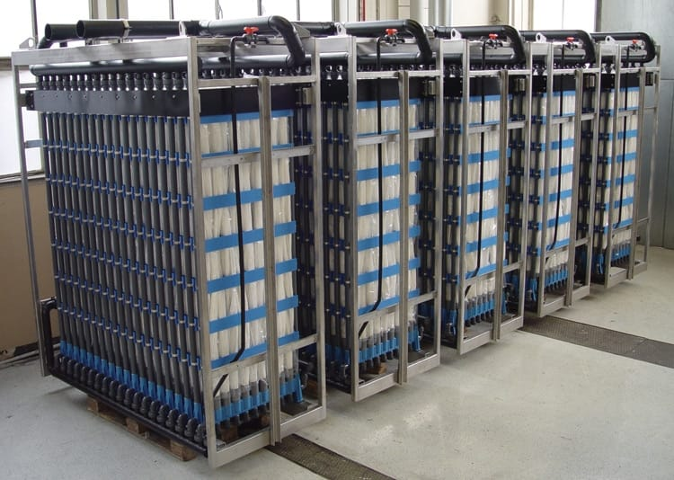

The membrane bioreactor (MBR) integrates aerobic biological treatment with submerged ultrafiltration membrane filtration in a single compact process — delivering the highest-quality effluent suitable for direct reuse in a smaller footprint than conventional systems.

The Aqua-Aerobic® MBR combines the activated sludge process with ultrafiltration membranes submerged directly in the biological tank. Biomass operates at concentrations far superior to conventional activated sludge (8,000–15,000 mg/L MLVSS vs 2,000–4,000 mg/L), resulting in smaller tank volume and superior removal efficiency.
The hollow-fiber membranes with 0.04 μm pores function as an absolute barrier — retaining 100% of biological sludge and providing perfect solid-liquid separation regardless of settleability conditions. The result is consistently high-quality effluent even during load variations, suitable for direct reuse without complementary treatment.
BOD < 5 mg/L, TSS ≈ 0 mg/L, and pathogen removal > Log 6 — no additional clarifier or tertiary filter needed.
Elimination of secondary clarifier and tertiary filters drastically reduces the required built area.
Effluent quality is independent of sludge settleability — absolute physical barrier through membranes.
Raw effluent enters the biological tank where aerobic biomass (activated sludge) degrades organic matter and nutrients. The UF hollow-fiber membranes are submerged directly in the aeration tank and operate under negative pressure (suction), drawing treated effluent through the 0.04 μm pores.
Biological sludge is 100% retained by the membranes and remains in the tank, eliminating the need for a secondary clarifier. Periodically, the membranes undergo pneumatic backwash (air relaxation) and chemical cleaning cycles to maintain flux. The base aeration of the membranes simultaneously controls fouling (scouring) and supplies O₂ to the biological process.
Activated sludge at high concentration degrades BOD, COD, nitrogen, and phosphorus in the aeration tank.
Submerged UF membranes retain 100% of sludge; high-quality permeate collected externally.
Pneumatic backwash and CIP maintain stable permeate flux throughout membrane service life.
Complete treatment in a smaller area — ideal for space-constrained cities
Reliable high-quality effluent production for municipal and industrial reuse
Treatment of effluents with highly variable loads and compositions
Hotels, hospitals, resorts, and condominiums with integrated treatment and reuse systems
Modernizing activated sludge systems with increased capacity and effluent quality
Lower sludge production and potential for energy and nutrient recovery
Our technical team evaluates your project and presents the ideal MBR configuration for your needs.